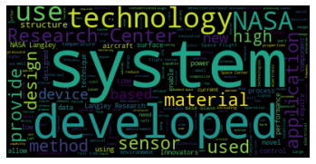
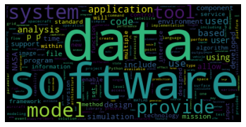
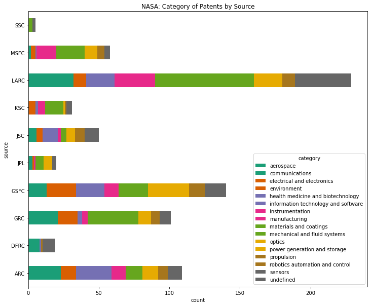
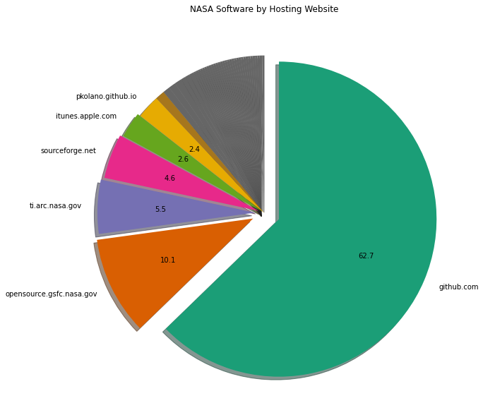

NASA Data#
from collections import Counter
import matplotlib.pyplot as plt
import numpy as np
import os
import pandas as pd
import requests
from wordcloud import WordCloud
---------------------------------------------------------------------------
ModuleNotFoundError Traceback (most recent call last)
/tmp/ipykernel_1932/4043235366.py in <module>
5 import pandas as pd
6 import requests
----> 7 from wordcloud import WordCloud
ModuleNotFoundError: No module named 'wordcloud'
Get data#
key = os.getenv("NASA_API")
url = "https://api.nasa.gov/techtransfer/patent/"
r = requests.get(url, {"api_key": key})
data = r.json()
patent = pd.DataFrame.from_records(
data["results"],
columns=[
"unique_id",
"designator1",
"name",
"description",
"designator2",
"category",
"unk1",
"unk2",
"unk3",
"source",
"website",
"unk4",
],
)
url = "https://api.nasa.gov/techtransfer/software/"
r = requests.get(url, {"api_key": key})
data = r.json()
software = pd.DataFrame.from_records(
data["results"],
columns=[
"unique_id",
"designator",
"name",
"description",
"designator1",
"category",
"license",
"unk1",
"website",
"source",
"unk2",
"unk3",
],
)
def create_description_wordcloud(df: pd.DataFrame):
descriptions = [entry for entry in list(df["description"]) if len(entry) > 0]
wordcloud = WordCloud().generate(" ".join(descriptions))
plt.imshow(wordcloud, interpolation="bilinear")
plt.axis("off")
plt.show()
create_description_wordcloud(patent)

create_description_wordcloud(software)

Who is getting these patents?#
patent.groupby(["source"]).size().sort_values(ascending=False)
source
LARC 229
GSFC 140
ARC 109
GRC 101
MSFC 58
JSC 50
KSC 31
JPL 20
DFRC 19
SSC 5
dtype: int64
And what for?#
patent.groupby(["category"]).size().sort_values(ascending=False)
category
materials and coatings 118
sensors 102
aerospace 79
mechanical and fluid systems 67
optics 58
electrical and electronics 44
information technology and software 43
manufacturing 41
health medicine and biotechnology 40
robotics automation and control 35
instrumentation 34
power generation and storage 33
communications 29
environment 24
propulsion 12
undefined 3
dtype: int64
Do certain sources specialize?#
patent.groupby(["source", "category"]).size().sort_values(ascending=False).head(20)
source category
LARC materials and coatings 56
sensors 39
aerospace 31
GSFC optics 29
GRC materials and coatings 27
ARC aerospace 20
GSFC information technology and software 20
MSFC mechanical and fluid systems 17
GSFC electrical and electronics 17
LARC manufacturing 16
GSFC sensors 15
GRC communications 15
LARC mechanical and fluid systems 14
MSFC manufacturing 14
LARC instrumentation 13
ARC health medicine and biotechnology 13
LARC optics 13
GSFC aerospace 12
ARC information technology and software 12
JSC health medicine and biotechnology 11
dtype: int64
fig, ax = plt.subplots(figsize=(12, 10))
pd.crosstab(index=patent["source"], columns=patent["category"]).plot(
kind="barh", stacked=True, ax=ax, colormap="Dark2"
)
ax.set_xlabel("count")
ax.set_title("NASA: Category of Patents by Source")
Text(0.5, 1.0, 'NASA: Category of Patents by Source')

Where is NASA software hosted?#
We’ll look at the websites and break them down by hosting provider.
def top_level(url: str) -> str:
search_strings = [".gov", ".com", ".org", ".net", ".io"]
for search in search_strings:
if search in url:
return (
(url.lstrip().split(search)[0] + search)
.split("//")[-1]
.replace("www.", "")
)
def categorize_sources(urls: list):
return [top_level(url) for url in urls]
data = dict(
Counter(
categorize_sources(
[entry for entry in list(software["website"]) if len(entry) > 0]
)
).most_common()
)
names = list(data.keys())
values = list(data.values())
def significant_labels(names, values):
labels = []
for i, e in enumerate(values):
if (e / sum(values)) * 100 > 2:
labels.append(names[i])
else:
labels.append("")
return labels
def significant_autopct(pct):
return ("%1.1f" % pct) if pct > 1 else ""
fig, ax = plt.subplots(figsize=(10, 20))
cmap = plt.get_cmap("Dark2")
colors = cmap(np.array(range(len(names))))
v = np.zeros(len(values))
for i in range(5):
v[i] = 0.1 - i * 0.02
plt.pie(
values,
labels=significant_labels(names, values),
autopct=significant_autopct,
startangle=90,
counterclock=False,
colors=colors,
explode=v,
)
plt.title("NASA Software by Hosting Website")
plt.show()
